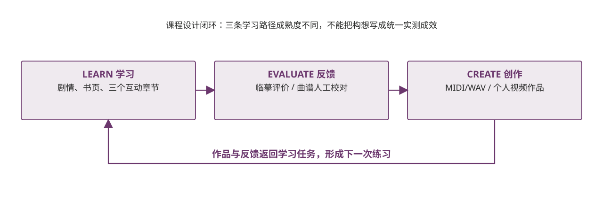

（三）分析过程逻辑论证：学习—评价—创造
学习环节建立共同起点；评价环节暴露误差或待校对项；创造环节生成个人化作品，并把反馈带回下一次练习。不同 Agent 的成熟度和证据边界分别标注。

证据与状态 东巴视觉评价是模型估计，不是专家判定；古乐输出由本地合成完成；视频质量尚待人工验收。
学习环节建立共同起点；评价环节暴露误差或待校对项；创造环节生成个人化作品，并把反馈带回下一次练习。不同 Agent 的成熟度和证据边界分别标注。

证据与状态 东巴视觉评价是模型估计，不是专家判定；古乐输出由本地合成完成；视频质量尚待人工验收。